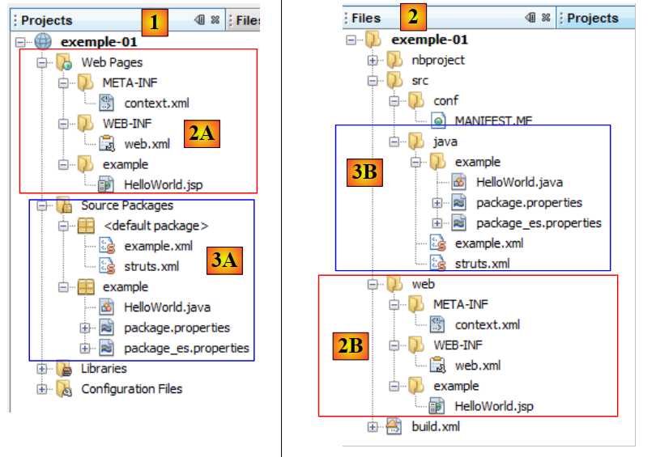
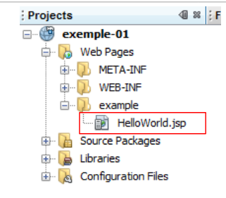

2. Un premier exemple
La plupart de nos exemples seront réduits à la seule couche web implémentée avec Struts 2 :
 |
Lorsque les bases seront acquises, nous étudierons un exemple plus complexe avec une architecture multi-couches.
2.1. Génération de l'exemple
Nous construisons notre première application.
 |
- en [1], on crée un nouveau projet
- en [2], on choisit le type Java Web / Web Application
- en [3], on donne un nom au projet
- en [4], on indique l'emplacement du projet.
- en [5], on fait du nouveau projet, le projet principal.
 |
- en [6], on choisit le serveur Tomcat. A l'installation de Netbeans 7.01, deux serveurs ont été installés, Apache Tomcat et Glassfish 3.1.
- en [7], on indique qu'on va travailler avec le framework Struts 2. C'est l'installation du plugin pour Struts 2 qui nous donne cette possibilité. Sans le plugin, le framework Struts 2 ne nous est pas proposé.
- en [8], on demande la création du projet d'exemple que nous allons étudier.
- en [9], on peut vérifier quelles bibliothèques Struts 2 vont être utilisées.
 |
- en [10], le projet généré. Nous allons y revenir.
- en [11], les bibliothèques du projet. Elles ont été intégrées par le plugin Struts 2. Si on ne dispose pas du plugin, on pourra trouver ces bibliothèques dans le dossier [lib] de la distribution Struts 2 téléchargée. On suivra alors les étapes 12 et 13.
2.2. Le projet généré dans le système de fichiers
 |
- en [1], l'onglet [Projects] présente une vue " développeur " du projet
- en [2], l'onglet [Files] présente le dossier du projet dans le système de fichiers
- en [2A], la branche [Web Pages] est représentée en [2] par le dossier [web] [2B]
- en [3A], la branche [Source Packages] est représentée en [2] par le dossier [java] [3B]
2.3. Le fichier de configuration [META-INF/context.xml]
 |
Ce fichier est le suivant :
<?xml version="1.0" encoding="UTF-8"?>
<Context antiJARLocking="true" path="/exemple-01"/>
La ligne 2 indique que le contexte de l'application web est /exemple-01. Toutes les URL du type [http://machine:port/exemple-01/...] seront traitées par cette application. On peut retrouver ce contexte dans les propriétés du projet [2] : clic droit sur le projet / Properties / Run.
2.4. Le fichier de configuration [WEB-INF/web.xml]
 |
Toute application web est configurée par le fichier [web.xml] du dossier [WEB-INF] de l'application. Celui qui a été généré est le suivant :
<?xml version="1.0" encoding="UTF-8"?>
<web-app version="3.0" xmlns="http://java.sun.com/xml/ns/javaee" xmlns:xsi="http://www.w3.org/2001/XMLSchema-instance" xsi:schemaLocation="http://java.sun.com/xml/ns/javaee http://java.sun.com/xml/ns/javaee/web-app_3_0.xsd">
<filter>
<filter-name>struts2</filter-name>
<filter-class>org.apache.struts2.dispatcher.FilterDispatcher</filter-class>
</filter>
<filter-mapping>
<filter-name>struts2</filter-name>
<URL-pattern>/*</URL-pattern>
</filter-mapping>
<session-config>
<session-timeout>
30
</session-timeout>
</session-config>
<welcome-file-list>
<welcome-file>example/HelloWorld.JSP</welcome-file>
</welcome-file-list>
</web-app>
- les lignes 3-6 définissent un filtre implémenté par la classe [org.apache.struts2.dispatcher.FilterDispatcher] de Struts 2. C'est cette classe qui jouera le rôle du contrôleur C du modèle MVC.
- lignes 7-10 : définissent une liaison entre un modèle d'URL et le filtre qui doit traiter les URL qui suivent ce modèle. Ici, il est indiqué que toute URL (modèle /*) doit être traité par le filtre nommé struts2. C'est le filtre défini lignes 3-6. Donc ici, toutes les URL passeront par le contrôleur Struts 2.
- lignes 11-15 : définissent la durée d'une session utilisateur, ici 30 minutes. Lors de des différentes requêtes, un utilisateur est suivi par un jeton de session qui lui a été attribué à sa première requête et qu'il envoie ensuite systématiquement à chaque nouvelle requête. Cela permet au serveur web de le reconnaître et de gérer une " mémoire " pour l'utilisateur qu'on appelle la session. Si entre deux requêtes s'écoulent plus de 30 mn, un nouveau jeton de session est généré pour l'utilisateur qui perd ainsi sa " mémoire " et en recommence une nouvelle.
- lignes 16-18 : définissent le fichier à afficher lorsque l'utilisateur interroge l'application web sans demander de document. Ainsi lorsque l'URL demandée sera [http://machine:port/exemple-01], l'URL servie sera [http://machine:port/exemple-01/example/HelloWord.JSP].
2.5. Le fichier de configuration [struts.xml]
 |
Le fichier [struts.xml] est le fichier de configuration de Struts 2. Il peut être n'importe où dans le ClassPath du projet. Dans le projet Netbeans ci-dessus, le ClassPath du projet est formé des deux branches :
- Source Packages
- Libraries
Tout dossier ou bibliothèque situé dans ces deux branches fait donc partie du ClassPath du projet. Il est usuel de mettre [struts.xml] dans <default package>. Ici, son contenu est le suivant :
<!DOCTYPE struts PUBLIC
"-//Apache Software Foundation//DTD Struts Configuration 2.0//EN"
"http://struts.apache.org/dtds/struts-2.0.dtd">
<struts>
<include file="example.xml"/>
<!-- Configuration for the default package. -->
<package name="default" extends="struts-default">
</package>
</struts>
- lignes 5 et 10 : la balise racine du document est la balise <struts>
- ligne 6 : le fichier [example.xml] vient s'insérer ici. Il amène donc sa propre configuration. Nous y reviendrons.
- lignes 8-9 : définissent un package nommé ici "default". Un package permet de configurer un groupe d'actions Struts 2 ayant la même URL. Par exemple [/chemin/Action1] et [/chemin/Action2]. On peut alors définir un package pour ces actions :
<package name="employes" namespace="/employes" extends="struts-default">
... configuration
</package>
Le package ci-dessus s'appelle "employes" et configure les actions d'URL /employes/Action. Le package peut hériter d'un autre package avec le mot clé "extends". Ci-dessus, le package employes hérite du package struts-default. Ce package se trouve dans le fichier [struts-default.xml] de la bibliothèque struts2-core.jar :
 |
Le package " struts-default " défini dans le fichier [struts-default.xml] configure diverses choses dont une liste d'intercepteurs exécutés lors de l'appel à une action. Revenons à la structure MVC d'une application Struts 2 :
 |
Pour traiter une URL de la forme [http://machine:port/.../Action], le contrôleur [FilterDispatcher] va instancier la classe qui implémente l'action demandée et va exécuter l'une de ses méthodes, par défaut une méthode appelée execute. L'appel à cette méthode execute va traverser une série d'intercepteurs :
 |
Les intercepteurs et l'action traitent tous la même requête. La liste des intercepteurs définie dans le package struts-default est suffisante la plupart du temps. Aussi nos packages Struts étendront-ils toujours le package struts-default. Pour savoir ce que font les différents intercepteurs, on lira le chapitre 4 de [ref2].
Revenons au fichier de configuration struts.xml :
<!DOCTYPE struts PUBLIC
"-//Apache Software Foundation//DTD Struts Configuration 2.0//EN"
"http://struts.apache.org/dtds/struts-2.0.dtd">
<struts>
<include file="example.xml"/>
<!-- Configuration for the default package. -->
<package name="default" extends="struts-default">
</package>
</struts>
- ligne 8 : le package nommé default a un rôle particulier. Il traite les actions qui n'ont pas été configurées dans les autres packages. Ici, dans les lignes 8-9, aucune configuration n'est faite pour le package default. On pourrait donc supprimer la définition de ce package.
Voyons maintenant le fichier [example.xml] inclus en ligne 6 du fichier [struts.xml] :
<?xml version="1.0" encoding="UTF-8" ?>
<!DOCTYPE struts PUBLIC
"-//Apache Software Foundation//DTD Struts Configuration 2.0//EN"
"http://struts.apache.org/dtds/struts-2.0.dtd">
<struts>
<package name="example" namespace="/example" extends="struts-default">
<action name="HelloWorld" class="example.HelloWorld">
<result>/example/HelloWorld.JSP</result>
</action>
</package>
</struts>
- ligne 8 : définit un package nommé example qui étend le package struts-default. Ce package gère les URL du type /example/Action (namespace /example).
- lignes 9-11 : définissent une action nommée HelloWorld (attribut name) qui correspond donc à l'URL /example/Helloworld. Cette action est traitée par une instance de la classe example.HelloWorld (attribut class).
- le contrôleur [FilterDispatcher] fera exécuter la méthode execute de cette classe.
- cette méthode rendra une chaîne de caractères appelée clé de navigation.
- les différentes clés de navigation doivent être définies par des balises <result name="clé"/> (ligne 10). En l'absence d'attribut name, c'est la clé success qui est utilisée par défaut. C'est le cas ci-dessus. Donc la méthode execute de la classe example.HelloWorld doit rendre au contrôleur [FilterDispatcher] la clé success.
- le contrôleur [FilterDispatcher] fait alors afficher la page [/example/HelloWorld.JSP] (ligne 10).
Si nous fusionnons les deux fichiers [struts.xml] et [example.xml], supprimons le package default qui semble inutile, tout se passe comme si on avait le fichier [struts.xml] réduit au seul fichier [example.xml].
2.6. L'action HelloWorld
 |
D'après le fichier [struts.xml] étudié, l'action HelloWorld est déclenchée lorsque l'URL demandée par le client est /example/HelloWorld. Sa méthode execute est alors exécutée. Elle doit rendre une clé de navigation. Nous avons vu qu'il n'y en avait qu'une : success et qu'alors c'était la page /example/HelloWorld.JSP qui était envoyée en réponse à l'utilisateur.
Le code de l'action HelloWorld est le suivant :
- ligne 5 : la classe HelloWorld dérive de la classe ActionSupport de Struts 2. C'est pratiquement toujours le cas. Cela permet de bénéficier de certaines méthodes comme la méthode getText de la ligne 8.
- lignes 7-10 : la méthode execute qui est exécutée sur invocation du contrôleur Struts. On sait qu'elle doit rendre une chaîne de caractères d'où sa signature ligne 7. Ici elle va rendre la constante SUCCESS définie elle aussi dans ActionSupport. D'autres constantes sont ainsi définies pour le résultat de la méthode execute :
SUCCESS | "success" |
ERROR | "error" |
INPUT | "input" |
LOGIN | "login" |
Donc ici, la méthode execute rend la chaîne success. Si on se réfère au fichier [struts.xml], c'est donc la page /example/HelloWorld.JSP qui sera renvoyée en réponse à l'utilisateur.
- ligne 8 : la méthode execute initialise le champ message de la ligne 14 avec la valeur de getText(" HelloWorld.message "). La méthode getText appartient à la classe parent ActionSupport. Elle permet de récupérer un texte dans un fichier selon la langue utilisée. Par défaut, le fichier package.properties situé dans le même package que l'action va être ici utilisé. Celui-ci vient en deux versions :
Le fichier [package.properties] est le suivant :
C'est une suite de lignes de texte de la forme clé=valeur. Si ce fichier est utilisé, getText("HelloWorld.message") aura pour valeur Struts is up and running ...
Le fichier [package_es.properties] est lui le suivant :
Si la langue utilisée par le navigateur client est l'espagnol (attribut es, dans package_es.properties), getText("HelloWorld.message") aura pour valeur ¡Struts está bien! ... Dans tous les autres cas, c'est le fichier [package.properties] qui sera utilisé.
2.7. La vue HelloWorld.JSP
 |
C'est le dernier élément du puzzle Struts. C'est la vue qui est affichée, lorsque l'URL /example/HelloWorld est demandée. Nous avons vu par quel dédale, la requête initiale est passée pour enfin afficher cette réponse. Le code de la page est le suivant :
<%@ page contentType="text/html; charset=UTF-8" %>
<%@ taglib prefix="s" uri="/struts-tags" %>
<html>
<head>
<title><s:text name="HelloWorld.message"/></title>
</head>
<body>
<h2><s:property value="message"/></h2>
<h3>Languages</h3>
<ul>
<li>
<s:url id="URL" action="HelloWorld">
<s:param name="request_locale">en</s:param>
</s:url>
<s:a href="%{URL}">English</s:a>
</li>
<li>
<s:url id="URL" action="HelloWorld">
<s:param name="request_locale">es</s:param>
</s:url>
<s:a href="%{URL}">Espanol</s:a>
</li>
</ul>
</body>
</html>
- la page utilise des balises Html (lignes 5, 6, ...) et des balises d'une bibliothèque définie par la ligne 3. Toutes les balises <s:xx> appartiennent à cette bibliothèque.
- ligne 7 : la balise <s:text> permet d'afficher un texte différent selon la langue du navigateur client. L'attribut name indique la clé à chercher dans les fichiers des messages. Ici, également, ce sont les fichiers package_xx.properties qui vont être exploités. On se rappelle qu'ils ne contiennent qu'un unique message de clé HelloWorld.message.
- ligne 11 : la balise <s:property name="propriété"> permet d'écrire la valeur d'une propriété d'un objet appelé ActionContext. On trouve dans cet objet :
- les propriétés de l'action qui a été exécutée. name="message" va afficher la valeur du champ message de l'action courante. Ce sont les méthodes get et set associées au champ qui sont utilisées pour en obtenir la valeur ou l'initialiser. Ces méthodes doivent donc exister.
- les attributs de la requête courante notés <s:property name="#request['clé']">
- les attributs de la session de l'utilisateur notés <s:property name="#session['clé']">
- les attributs de l'application elle-même notés <s:property name="#application['clé']">
- les paramètres envoyés par le navigateur client notés <s:property name="#parameters['clé']">
- la notation <s:property name="#attr['clé']"> affiche la valeur d'un objet cherché dans la page, la requête, la session, l'application dans cet ordre.
- lignes 16-18 : la balise <s:url > sert à définir une URL. L'attribut id donne un nom à l'URL qui va être créée. Ce nom est ensuite utilisé ligne 19. L'attribut action indique vers quelle action doit pointer l'URL.
- ligne 17 : la balise <s:param ..> permet d'ajouter des paramètres à l'URL sous la forme ?param1=valeur1¶m2=valeur2&... Ici, le paramètre ajouté sera ?request_locale=es.
Au final, l'URL générée sera la suivante :
Pour comprendre cette URL, il faut se rappeler que la page [HelloWorld.JSP] est affichée dans deux cas :
- (suite)
- sur demande directe de l'URL [/exemple-01/example/HelloWorld.JSP]
- sur demande de l'action [/exemple-01/example/HelloWorld.action]
Dans les deux cas, le chemin des URL est /exemple-01/example. La balise <s:url action= "... "> ajoute l'action définie par l'attribut action à ce chemin. Ainsi on obtient /exemple-01/example/HelloWorld. Elle ajoute ensuite le suffixe .action à l'URL précédente ainsi que les paramètres de l'URL s'il y en a. L'URL obtenue /exemple-01/example/HelloWorld.action?request_locale=en va appeler l'action HelloWorld définie dans le fichier [struts.xml] tout en passant le paramètre request_locale=en . Ce dernier ne sera pas traité par l'action HelloWorld mais par l'un des intercepteurs de Struts, celui qui gère l'internationalisation des pages. Le paramètre request_locale sera reconnu et traité. La langue des pages deviendra l'anglais (en).
- ligne 19 : définit un lien Html. L'attribut href de la balise <a> attend une chaîne de caractères. Ici, on veut utiliser la valeur de l'URL définie en ligne 16 et d'id URL. On écrit pour cela, href="%{URL}". La variable URL est évaluée et sa valeur affectée à l'attribut href. Dans la plupart des cas, l'évaluation des variables est implicite. Par exemple, lorsqu'on écrit
c'est la valeur de la propriété message qui est affichée et non la chaîne " message ". Mais dans d'autres cas, il faut forcer l'évaluation des variables ou propriétés. Si on avait écrit href= "URL", c'est la chaîne URL qui aurait été affectée à l'attribut href.
- lignes 23-27 : créent un lien Html pour changer la langue des pages en espagnol.
2.8. Exécution de l'application
Nous lançons l'exécution du projet :
 |
- en [1], on lance l'exécution du projet [exemple-01]. Le serveur web Tomcat est alors lancé automatiquement s'il ne l'était pas déjà. L'URL [/exemple-01] est demandée [3]. Le fichier [web.xml] est alors utilisé :
<?xml version="1.0" encoding="UTF-8"?>
<web-app version="3.0" xmlns="http://java.sun.com/xml/ns/javaee" xmlns:xsi="http://www.w3.org/2001/XMLSchema-instance" xsi:schemaLocation="http://java.sun.com/xml/ns/javaee http://java.sun.com/xml/ns/javaee/web-app_3_0.xsd">
<filter>
<filter-name>struts2</filter-name>
<filter-class>org.apache.struts2.dispatcher.FilterDispatcher</filter-class>
</filter>
<filter-mapping>
<filter-name>struts2</filter-name>
<URL-pattern>/*</URL-pattern>
</filter-mapping>
<session-config>
<session-timeout>
30
</session-timeout>
</session-config>
<welcome-file-list>
<welcome-file>example/HelloWorld.JSP</welcome-file>
</welcome-file-list>
</web-app>
- parce que dans l'URL [/exemple-01] demandée, aucune page n'est précisée, Tomcat va utiliser la balise <welcome_file-list> des lignes 16 et 18. C'est donc l'URL /exemple-01/example/HelloWorld.JSP qui va être servie.
- parce que Struts 2 traite toutes les URL (ligne 8 et 9), cette URL va être filtrée par Struts. Comme elle ne correspond pas à une action mais à une page JSP, cette dernière va être affichée.
- ce que nous voyons en [2] est donc la page HelloWorld.JSP que nous avons étudiée.
- en [4], on voit que la balise <title><s:text name="HelloWorld.message"/></title> n'a pas produit son effet ni la balise <h2><s:property value="message"/></h2>. La raison en est qu'aucune action n'a été appelée. La liste des intercepteurs qui s'exécutent avant l'action n'a donc pas été exécutée, notamment celui qui gère l'internationalisation. La balise d'internationalisation <s:text ...> n'a pu être traitée correctement. Par ailleurs, la propriété message qui référence le champ message de la classe Action1 n'existe pas. D'où l'absence d'affichage.
Maintenant, suivons le lien [English]. Nous obtenons la page suivante :
 |
- en [1], l'URL demandée. Nous avons expliqué la formation de cette URL. Cette fois-ci une action Struts est demandée : l'action HelloWorld défini dans [example.xml].
<struts>
<package name="example" namespace="/example" extends="struts-default">
<action name="HelloWorld" class="example.HelloWorld">
<result>/example/HelloWorld.JSP</result>
</action>
</package>
</struts>
- la méthode execute de cette action a été exécutée. Nous avons vu qu'elle rendait la clé success. De la ligne 4 ci-dessus, on en déduit que la page /example/HelloWorld.JSP est renvoyée en réponse au client. C'est ce que nous voyons en [3].
- en [1], nous voyons que l'URL demandée est paramétrée par le paramètre request_locale=en. La langue des pages sera désormais l'anglais. En effet, ce choix de langue est stocké dans la session de l'utilisateur qui conservera ce choix jusqu'à ce qu'il en change.
- en [2] et [3], on voit l'internationalisation à l'oeuvre. Les balises <title><s:text name="HelloWorld.message"/></title> et <h2><s:property value="message"/></h2> ont cette fois-ci produit leur effet.
Si nous choisissons maintenant le lien [Espanol], nous obtenons alors la page en espagnol :
 |
2.9. Conclusion
Nous avons étudié un exemple généré automatiquement par le plugin Struts 2 pour Netbeans. Nous avons constaté qu'il était assez difficile de suivre le traitement d'une requête. Les éléments suivants interviennent :
- la configuration [web.xml], [struts.xml]
- l'action exécutée : intercepteurs et méthode execute.
Au début, la mécanique de Struts 2 peut paraître complexe. Il faut un peu de temps pour s'y habituer. Nous allons maintenant présenter une série d'exemples qui éclairent chacun un point particulier de Struts.